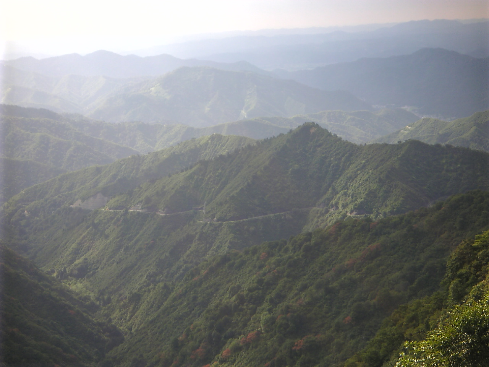
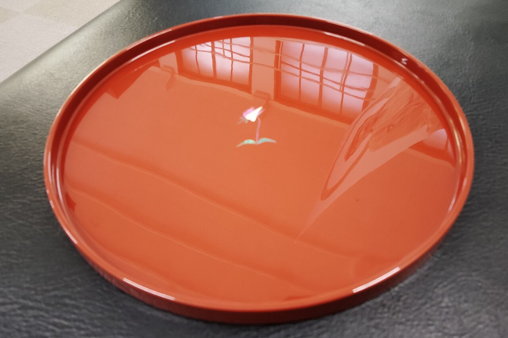
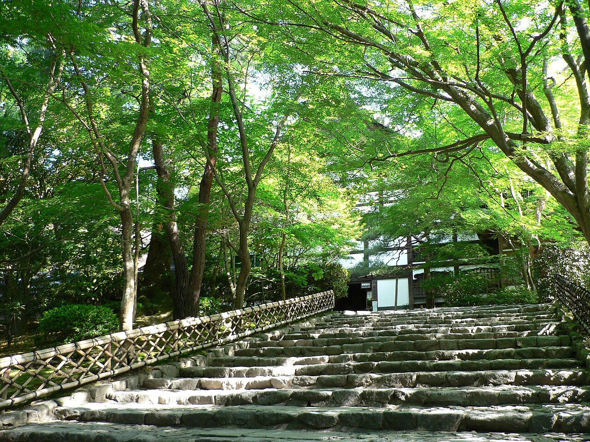

掲載写真はフリー素材のイメージ画像です。店舗の実際の様子ではありません。日本国内の他地域や海外で撮影されたもの、撮影地が不明なものを含みます。
以下のコンセプトは制作側の案です。お店の理念や店名の由来ではありません。実際の内容はお店にご確認ください。
お店について
制作側の案「ひとしずくの波紋」
所在地が山中温泉という温泉地の町であることから、制作側で「湯面に落ちた一滴と、静かに広がる輪」をこのサイトの見せ方として考えました。写真を円で切り、淡い水色と茶色でやわらかくまとめているのは、そのためです。お店と温泉との関係や、店名との関係を示すものではありません。
店名について
店名の表記は「calan hair | カラン ヘア」です。店名の意味・由来は、準備中(お問い合わせください)。
- 理念
- 準備中(お問い合わせください)
- スタッフ
- 準備中(お問い合わせください)
- 席数
- 準備中(お問い合わせください)
- 得意分野
- 準備中(お問い合わせください)
- 開業
- 準備中(お問い合わせください)



ご連絡はお電話かInstagramで
営業時間・料金・ご予約方法などは準備中です。お問い合わせください。